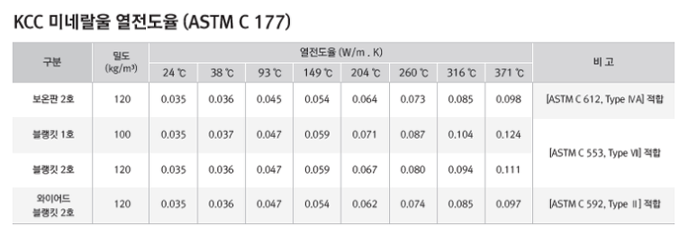

미네랄 울은 대표적인 무기질단열재입니다.
규산 칼슘계의 광석을 고온으로(1600℃) 용융시켜 만든 무기질의 인조 광물 섬유 단열재로, 물리적 성질이나 특징은 유리면과 유사합니다.
미네랄 울은 섬유가 유연하고 복원력이 우수하며 건축물의 내화, 흡음, 단열은 물론 각종 플랜트, 선박 등의 보온, 단열, 보냉과 농업용에 이르기까지 널리 사용되고 있으나 상대적으로 열전도율이 높아 에너지 절감 효과는 낮은 단점이 있습니다.

보건·환경 규제가 엄격한 미국, 일본 등 선진국에서도 100여년 동안 꾸준이 사용되고 있으며, 글라스 울과 함께 가장 많이 쓰이는 단열재중 하나입니다.
준불연 가등급 EPS 단열재 DK보드
건축용 / 외단열용 / 판넬용
문의 1855-2240